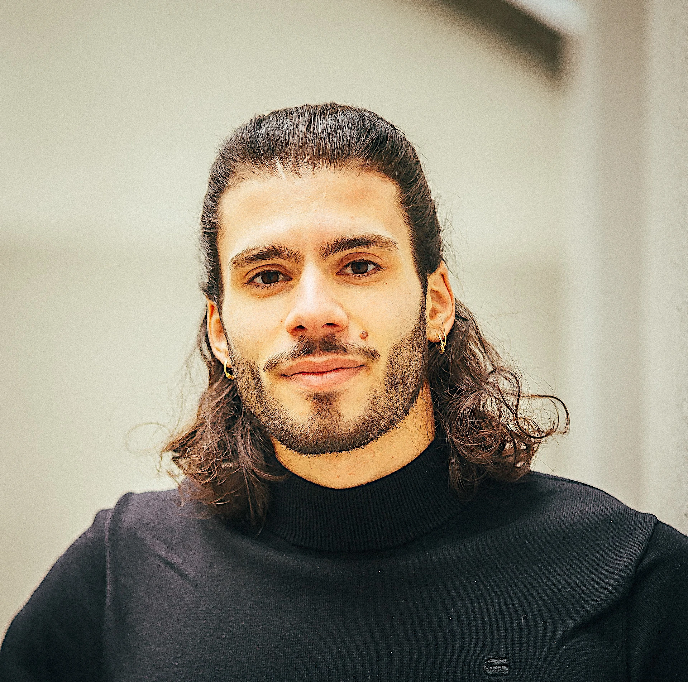

Hi, I'm a sports scientist and certified Neuroathletic Trainer with a deep passion for movement and how the human brain works. My journey into neuroscience began with the Feldenkrais Method, which opened my eyes to how movement and awareness shape performance, regeneration, and creativity.
After completing my Bachelor's degree in Sport Science, I dove into the world of neuroathletics with Z-Health — fascinated by how targeted brain-based training can unlock new levels of physical and mental potential. I now integrate this approach not only in performance and rehab settings but also in my own artistic work as a dancer and creative.
I'm active in triathlon, tennis, calisthenics and really, anything that challenges my body and mind. Above all, I love to dance. I run with my partner a small dance school focused on Brazilian Zouk, and I truly believe that dancing is one of the best workouts you can do for your body and your brain.
Whether in training, therapy, or the creative process, my goal is to help people move smarter, feel stronger, and live more fully. If you want to get to know me better click on my personal Instagram account.
Click here to find my Z-Health Certifications.
Hallo, ich bin Sportwissenschaftler und zertifizierter Neuroathletik-Trainer mit einer großen Leidenschaft für Bewegung und Neurowissenschaften. Meine Reise in die Neurowissenschaften begann mit der Feldenkrais-Methode, die mir die Augen dafür geöffnet hat, wie Bewegung und Bewusstsein, Performance und Kreativität beeinflussen. Nach meinem Bachelor-Abschluss in Sportwissenschaften tauchte ich mit Z-Health in die Welt der Neuroathletik ein, fasziniert davon, wie gehirnbasiertes Training neue Ebenen des körperlichen und geistigen Potenzials erschließen kann. Ich integriere diesen Ansatz nun nicht nur in Leistungs- und im Reha-Bereich, sondern auch in meine eigene künstlerische Arbeit als Tänzer und Kreativer. Ich bin aktiv im Triathlon, Tennis, Calisthenics und eigentlich allem, was mich körperlich und mental herausfordert. Vor allem liebe ich es zu tanzen. Gemeinsam mit meiner Partnerin leite ich eine kleine auf brasilianischen Zouk spezialisierte Tanzschule – überzeugt davon, dass Tanzen eines der besten Workouts für Körper und Geist ist. Ob im Training, in der Therapie oder im kreativen Prozess – mein Ziel ist es, Menschen dabei zu helfen, sich intelligenter zu bewegen und ein erfüllteres Leben zu führen. Wenn du mich besser kennenlernen möchtest, wirf einen blick auf mein persönliches Instagramkonto .
Klick hier um meine Z-Health Zertifizierungen zu finden.